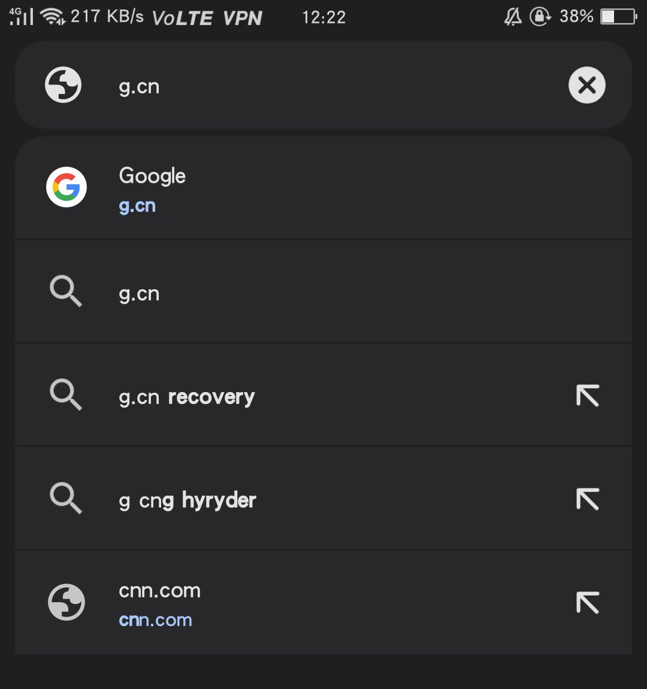
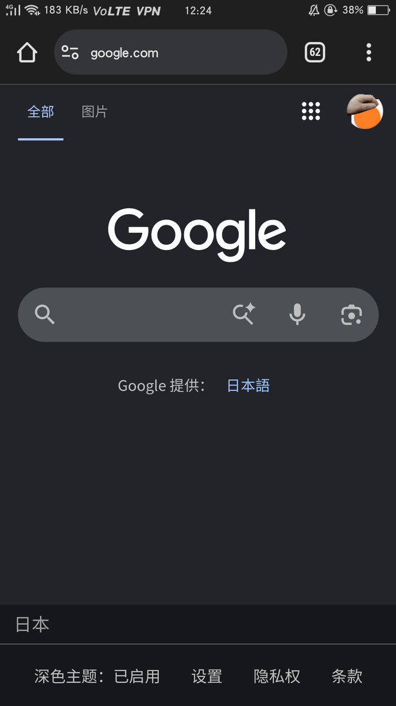

一直以来 https://t.co/hSRzomgHUR 都没有 ICP 备案，而谷歌的 https://t.co/EV4apP2c3H 用的是国内节点，仅用首页 404 伪装。如果您要下载谷歌浏览器，最简单的方法就是访问 https://t.co/ytObLzEmi4 然后走 dl 下载安装程序，全程不需要挂 VPN。
所以 https://t.co/hSRzomgHUR 并没有被污染，GMail的smtp服务器也没有被污染，一直是可以直连的状态。

所以 https://t.co/hSRzomgHUR 并没有被污染，GMail的smtp服务器也没有被污染，一直是可以直连的状态。


谷歌曾经为中国大陆用户提供的 Google 短域名 (https://t.co/axU3oGWvQU) 至今仍能访问。
其域名会自动跳转到 Google 搜索主站。
如图为跳转缓存结果。
图二为跳转结果。 https://t.co/iKAqi7CNn8
其域名会自动跳转到 Google 搜索主站。
如图为跳转缓存结果。
图二为跳转结果。 https://t.co/iKAqi7CNn8